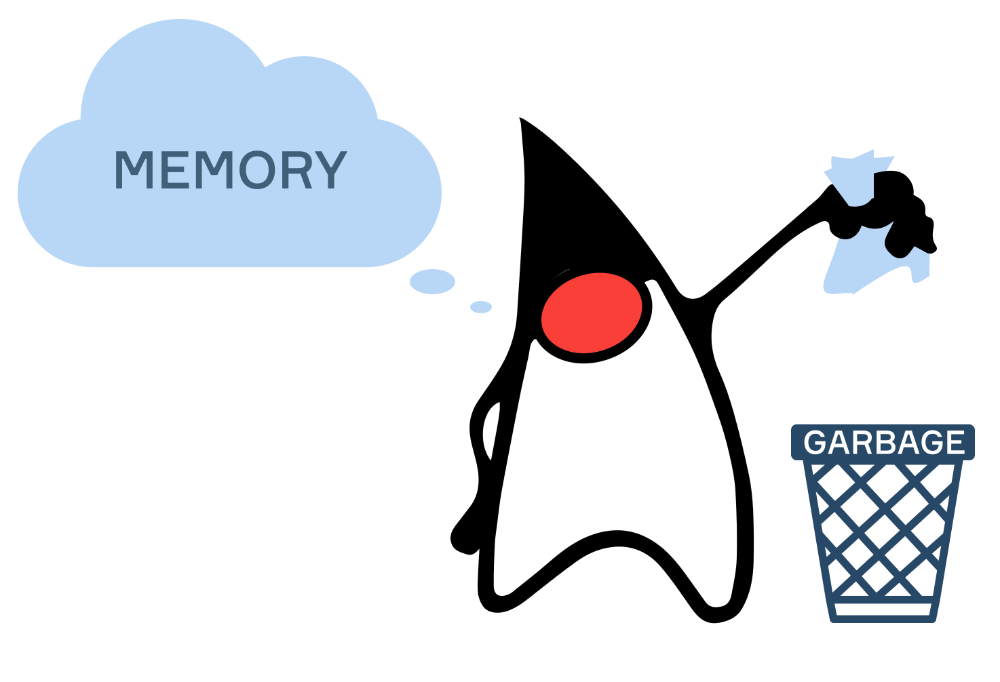

Збирач сміття
Теорія
Як ви вже знаєте, коли програма мови JVM створює новий об’єкт, використовується частина пам’яті купи. Що станеться, якщо не залишиться доступної пам’яті купи? Як JVM дізнається, які частини пам’яті можна повторно використовувати для чогось іншого? У цій темі ми розглянемо ці запитання та дізнаємось про збирання сміття — спосіб автоматичного керування пам’яттю.
§1. Стратегії управління пам’яттю
Пам’ять у купі, навіть якщо вона достатньо велика для більшості завдань програмування, все одно обмежена, оскільки займає частину фізичної пам’яті (RAM) комп’ютера. Тому програма, яка займає забагато пам’яті, зрештою призведе до збоїв. Більшість програм мають об’єкти, які на певному етапі виконання більше не використовуватимуться, що означає, що пам’ять може бути звільнена та використана повторно пізніше.
Деякі мови програмування (наприклад, C або C++) вимагають від програмістів виділення та звільнення пам’яті вручну. Хоча це забезпечує більший контроль над ресурсами, керування пам’яттю вручну може бути складним завданням, особливо для початківців, що призводить до помилок і витоку пам’яті.
JVM використовує автоматичне керування пам’яттю, що дозволяє розробникам не турбуватися про пам’ять під час написання коду та запобігає можливим помилкам програмування. Пам’ять виділяється в купі JVM кожного разу, коли програма створює новий об’єкт, і звільняється за допомогою процесу збирання сміття.
§2. Що таке збирач сміття?
Збирач сміття (або Garbage Collector - GC) — це частина JVM, яка звільняє пам’ять під час виконання для подальшого використання. Існує багато різних алгоритмів і реалізацій збирання сміття, але їх роботу можна спростити двома звичайними кроками. Перший крок — визначити, які частини пам’яті програма більше не використовує (тобто «сміття»), а другий — звільнити ці частини пам’яті. Крім того, операція стиснення може бути виконана після етапу видалення — усі наразі використовувані об’єкти переміщуються поруч один з одним, щоб звільнити велику безперервну область пам’яті та уникнути фрагментації.
Щоб ідентифікувати сміття, JVM переглядає всі об’єкти та перевіряє, чи доступні вони в програмі. Усі об’єкти, до яких неможливо отримати доступ із програми чи інших доступних об’єктів, вважаються «сміттям», а відповідна пам’ять звільняється.
Деякі алгоритми враховують додаткову інформацію про об’єкти, наприклад, час із моменту створення об’єкта. Такі алгоритми називаються алгоритмами генераційного збирання сміття. Було помічено, що більшість об’єктів у програмах використовуються лише протягом короткого часу після створення. Таким чином, збирачу сміття не потрібно перевіряти кожен об’єкт у купі під час кожного запуску, і він зосереджується переважно на нещодавно створених об’єктах («молодше покоління»), що скорочує час збирання сміття.
§3. Запуск GC
Збирання сміття виконується автоматично під час роботи програми. JVM сама виконує всю брудну роботу, включаючи рішення про те, коли запускати GC. Це може статися, наприклад, через фіксовані проміжки часу або коли не залишилося вільної пам’яті купи.
У більшості випадків розробникам не потрібно думати про те, як працює збирач сміття та як його налаштувати. Однак у сучасних високонавантажених програмах ці знання можуть бути корисними.
У своїх програмах ви можете використовувати такі способи, щоб запросити GC на виконання завдання:
- calling System.gc();
- calling Runtime.getRuntime().gc().
Програмісти не повинні запускати збирач сміття вручну, і ці виклики навіть не гарантують виклик GC. Ми наполегливо рекомендуємо використовувати їх лише в тестовому середовищі.
§4. Приклад
Припустимо, у нас є код для перевірки обсягу використаної пам’яті (це можна зробити за допомогою Runtime.getRuntime().totalMemory() та Runtime.getRuntime().freeMemory()), і ми вставляємо його в програму, яка працює таким чином:
- Надрукувати інформацію про використану пам’ять перед виконанням будь-яких операцій.
- Створити групу нових об’єктів у циклі для подальшого використання.
- Надрукувати інформацію про використану пам’ять після створення об’єктів.
- Виконати необхідні операції (без створення нових об’єктів), щоб об’єкти більше не використовувалися в коді.
Значення з кроку 3 буде більшим за значення з кроку 1, оскільки кожен новий об’єкт займає частину доступної пам’яті. Після кроку 4 об’єкти стають недоступними для коду, і пам’ять можна звільнити, викликавши System.gc() або Runtime.getRuntime().gc(). Друк інформації про використану пам’ять після виклику збирача сміття покаже значення, менше значення з кроку 3, якщо збирання сміття справді було виконано.
§5. Висновок
- JVM виконує автоматичне керування пам’яттю, захищаючи програмістів від можливих витоків пам’яті та помилок.
- Збирач сміття (GC) — це частина JVM, яка ідентифікує невикористані «сміттєві» об’єкти та очищає відповідні області пам’яті для повторного використання їх пізніше.
- GC можна викликати вручну в коді, але не гарантовано, що збирання сміття буде виконано, оскільки рішення все ще залежить від JVM.
Ви також можете переглянути Урок на hyperskill.org.
Практичні завдання та відповіді
Подаються завдання та варіанти відповідей. Правильний варіант виділено синім кольором.
№1. Виклик GC за допомогою середовища виконання
Питання: Виберіть інструкцію, яка описує, що робить наступний рядок коду зі збирачем сміття:
Runtime.getRuntime().gc()Виберіть один варіант зі списку:
- Це не впливає на поведінку GC
- Примусово негайно виконується GC
- Запитує на виконання GC, але це не обов’язково відбувається ✔
- Примусово виконується GC рівно через одну секунду
Пояснення. Інструкція "Runtime.getRuntime().gc()" вимагає виконання GC, але це не обов’язково відбувається.
№2. Навіщо нам це
Питання: Яка мета процесу збору сміття?
Виберіть один варіант зі списку:
- Щоб зменшити кількість необхідних змінних
- Щоб створити нові об’єкти
- Щоб очистити пам’ять від невикористаних об’єктів ✔
- Щоб завершити роботу програми
Пояснення. Метою процесу збирання сміття є очищення пам’яті від невикористаних об’єктів.
№3. Отримання використаної пам’яті за допомогою середовища виконання
Питання: Як можна отримати поточний обсяг використаної пам’яті в байтах за допомогою наступних викликів?
- Runtime.getRuntime().totalMemory(), який повертає обсяг пам’яті (у байтах), доступний для створених і майбутніх об’єктів.
- Runtime.getRuntime().freeMemory(), який повертає обсяг пам’яті (у байтах), доступний для майбутніх об’єктів.
Виберіть один варіант зі списку:
- Runtime.getRuntime().totalMemory() - Runtime.getRuntime().freeMemory() ✔
- (Runtime.getRuntime().totalMemory() + Runtime.getRuntime().freeMemory()) / 1024
- Runtime.getRuntime().freeMemory() - Runtime.getRuntime().totalMemory()
- Runtime.getRuntime().totalMemory() / 1024
Пояснення. Поточний обсяг використовуваної пам’яті в байтах можна отримати шляхом віднімання обсягу вільної пам’яті від загальної доступної пам’яті, наприклад: Runtime.getRuntime().totalMemory() - Runtime.getRuntime().freeMemory( ).
№4. Економте ресурси
Питання: Що економить збирач сміття?
Виберіть один варіант зі списку:
- ЦП
- Дискова пам’ять
- Мережевий трафік
- RAM ✔
Пояснення. Збирач сміття зберігає RAM (оперативну пам’ять), звільняючи пам’ять, зайняту невикористаними об’єктами.
№5. Що можна збирати
Питання. Розглянемо код, який робить наступне:
- Створює рядковий масив bookNames і цілий масив bookPages, обидва довжиною 1000.
- Створює 1000 об’єктів класу Book із рядковим членом bookInfo, складеним із використанням значень bookNames і bookPages з тим самим індексом.
- Друкує bookInfo усіх створених об’єктів книги.
Що можна очистити під час процесу збирання сміття після кожного з кроків, наведених вище? Припустімо, що програма запускається безпосередньо перед кроком 1 і завершується відразу після кроку 3 без виконання будь-яких додаткових операцій.
Установіть відповідність між елементами лівого та правого стовпців:
- Після кроку 1 – Жоден зі згаданих об’єктів
- Після кроку 2 – масиви bookNames і bookPages
- Після кроку 3 - Об’єкти класу Book
Пояснення. 1. Час створення без руйнування та вигнання; 2. Час GC для дрібних деталей; 3. Час GC для цілих об’єктів.
№6. Поведінка GC
Запитання: Виберіть одне правильне твердження про збирач сміття.
Виберіть один варіант зі списку:
- Програмісти повинні вручну викликати GC перед зупинкою програми, щоб уникнути витоку пам’яті
- GC очищає пам’ять лише тоді, коли вільної пам’яті немає
- GC автоматично очищає пам’ять лише перед завершенням програми
- GC працює автоматично під час виконання програми ✔
Пояснення. GC працює автоматично під час виконання програми.
№7. Виклик GC
Питання: Як ви можете попросити збирача сміття виконати очищення?
Виберіть один або кілька варіантів зі списку:
- System.out.println("need gc")
- GC.clean()
- Runtime.getRuntime().gc() ✔
- System.gc() ✔
Пояснення. Ви можете попросити збирача сміття виконати очищення за допомогою Runtime.getRuntime().gc() або System.gc().
Що таке збирання сміття в Java?
Збирання сміття – це процес, під час якого віртуальна машина Java (JVM) автоматично звільняє пам’ять, яка більше не використовується об’єктами в програмі. Коли програма Java створює об’єкти, JVM виділяє пам’ять для зберігання цих об’єктів. Однак, коли об’єкт більше не потрібен, він стає придатним для збору сміття. Збирач сміття ідентифікує та видаляє ці невикористані об’єкти, звільняючи пам’ять для використання іншими об’єктами. Цей процес допомагає запобігти витокам пам’яті та покращує продуктивність програми, зменшуючи обсяг пам’яті, якою має керувати сама програма. У Java розробникам не потрібно вручну звільняти пам’ять, оскільки JVM піклується про це через автоматичне збирання сміття.